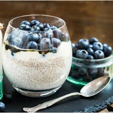

Chia Pudding with Berries
Ingredients:-
- 2 tbsp chia seeds
- ½ cup milk (dairy, almond, or coconut)
- 1 tsp honey or maple syrup (optional)
- ½ tsp vanilla extract (optional)
- ¼ cup mixed berries (strawberries, blueberries, raspberries)
- 1 tbsp chopped nuts (optional, for crunch)
Instructions:-
- In a jar or bowl, mix chia seeds, milk, honey, and vanilla extract.
- Let it sit for 5 minutes, then stir again to prevent clumping.
- Cover and refrigerate for at least 2 hours or overnight.
- Before eating, top with fresh berries and nuts.
Back To Top